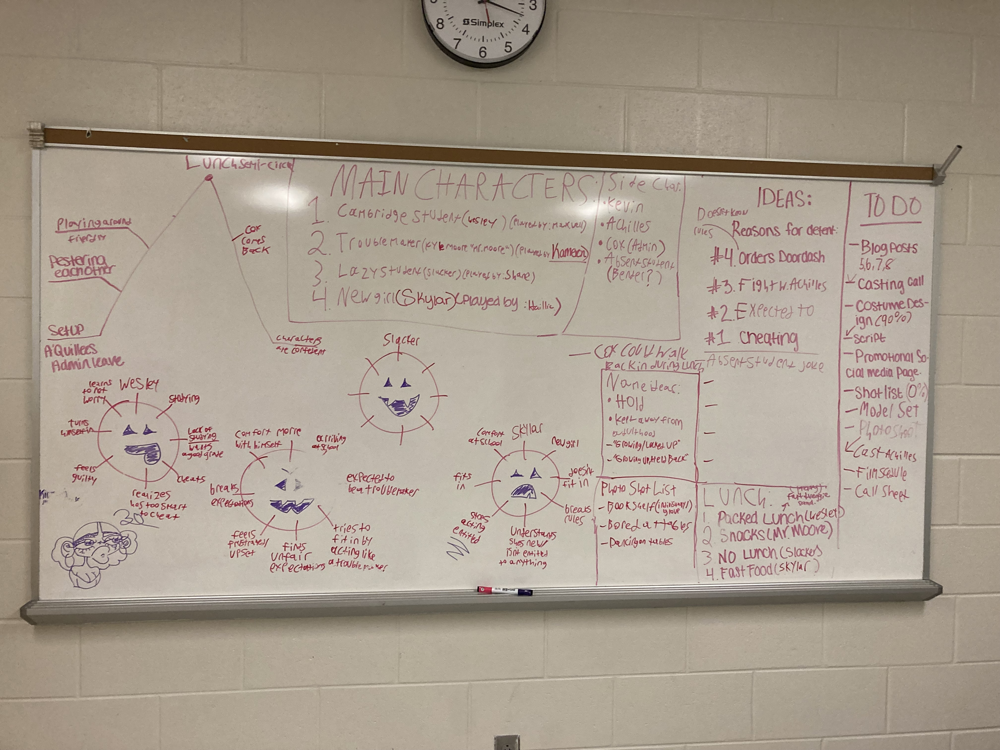
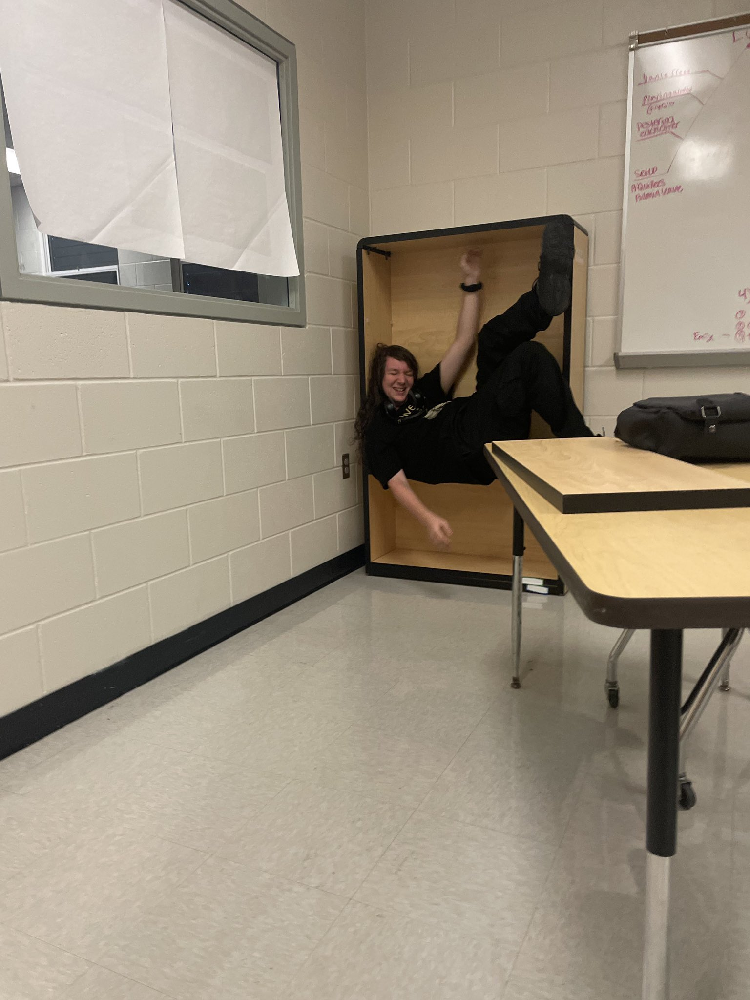

in seinor year of high school, i wrote and partially filmed a film called "Expected to Grow Up". it was
refered to as "the lunch bunch" but i always hated that name. at the time i knew my limits were teenage actors
and the setting of a school, so i thought why not a dramady/coming of age film set in 1 room, detention.
i have the script in its entirety but it is printed out and
i dont feel like scanning it. so instead heres my planning whiteboard:

we also had an assignment to make a poster the film, and i thought the theme of
"being put in a box" should also be in the poster. having the actors crammed
into a bookshelf was visually intresting and fit the theme of the movie.
i never got the actors crammed in a bookshelf but i did test if the bookshelfs
could support a human. i figured if they supported me they would support everyone
else.

lastly, i wrote into the film that a fish gets thrown at a skeleton.
thankfully we filmed this part: